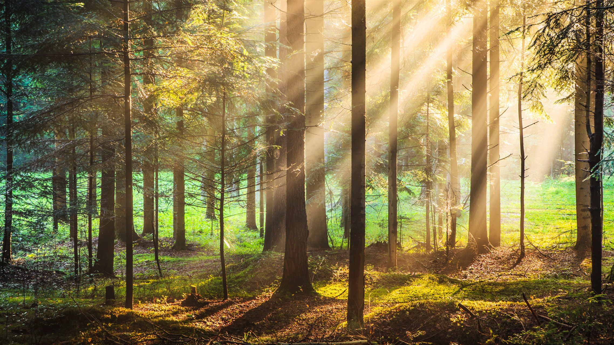
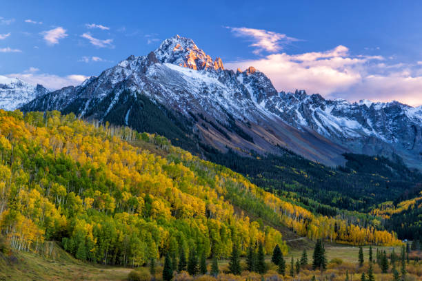
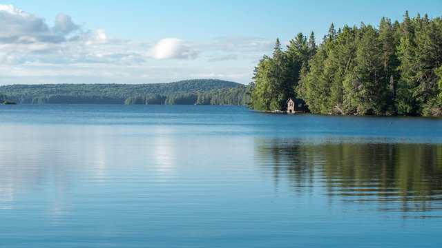

Zöldellő erdők
Lombos fák, madárcsicsergés, árnyas ösvények és friss levegő vár rád.

Magas hegycsúcsok
Lenyűgöző panorámák és tiszta forrásvizek a világ tetején.

Béke a tavaknál
Kristálytiszta tavak partján figyelheted meg a természet ritmusát.
A GreenNature célja, hogy közelebb hozza az embereket a természethez. Cikkeink, galériáink és adatlapjaink révén felfedezheted a természet sokszínűségét és megismerheted, hogyan őrizheted meg annak értékeit.